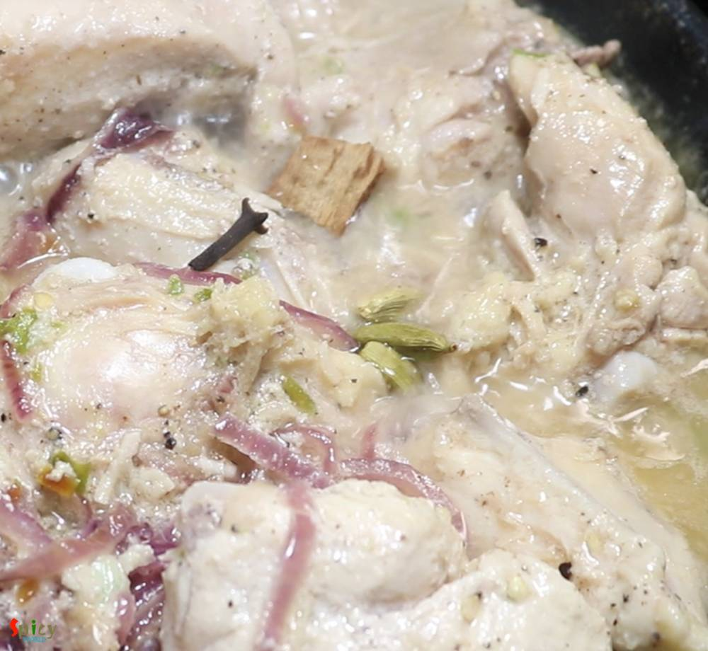
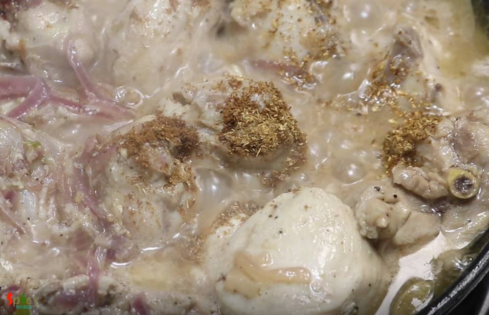
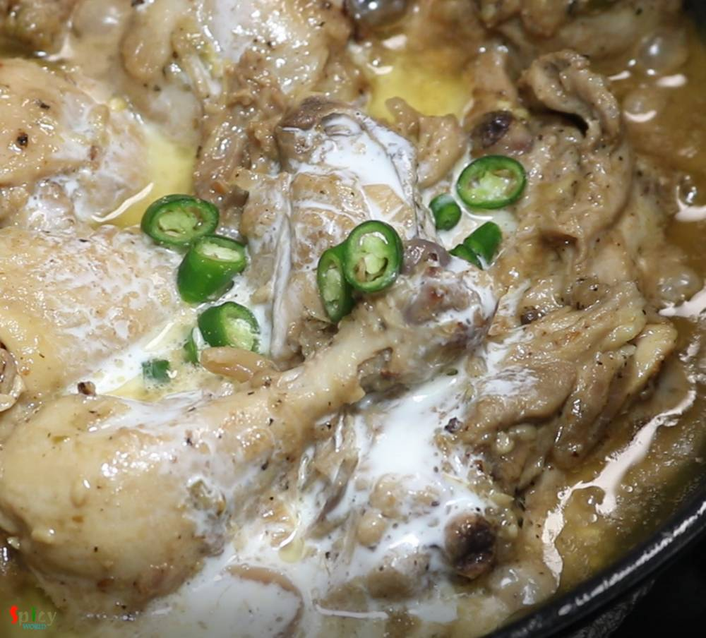

Simple and Easy Recipes
Dahi Chicken / Dahiwala Murgh / Doi Chicken
© 2016 Spicy World, Published on: Jan 4, 2019
Dahi chicken is a very simple yet delicious chicken curry which goes best with roti or plain chapati. Dahi or Doi means plain full fat yogurt. This dahi wala murgh has a delicious thick white colored yogurt and onion based gravy. Well, I prefer white colored doi chicken, if you like colorful then add some turmeric powder and red chili powder, rest of the recipe will remain same. You will get very soft chicken pieces and tasty gravy from this recipe. Try this in your kitchen, let me know how it turned out for you.

Ingredients
- 700 grams of curry cut chicken.
- 1/4th cup of full fat yogurt.
- 1 big onion, thinly sliced.
- 2 Tablespoons of ginger garlic paste.
- 4 green chilies, paste.
- 2-3 Tablespoons of fresh black pepper powder.
- 1 Teaspoon of each roasted cumin & coriander powder.
- Salt and sugar.
- Whole spices ( 3 green cardamom, 2 cloves, 1 small cinnamon stick).
- 2-3 Tablespoons of fresh heavy cream.
- 2 green chilies, chopped.
- Half Teaspoon of garam masala powder.
- 4-5 Tablespoons of cooking oil.
- Hot water if required.


Steps
Marinate the cleaned chicken with yogurt, half of the ginger garlic and green chili paste, some salt and 1 Tablespoon of black pepper powder.
Keep it aside for 2-3 hours.
Then heat oil in a pan.
Add the onion slices, cook for 3-4 minutes on medium flame. Do not make them brown.
Add the remaining ginger garlic and green chili paste. Cook for a minute.
Add the marinated chicken, cook for 10 minutes on medium flame.
Add all of the whole spices, mix and cook another 15 minutes. The chicken will release lot of juices. I didn't add any water, if the gravy becomes dry please add some hot water.
Next add roasted cumin and coriander powder. Mix well and cook until the chicken becomes soft.
To balance the tartness from yogurt, add half Teaspoon of sugar along with the remaining black pepper powder. Mix well.
Add heavy cream and chopped green chilies. Mix and turn off the heat.
Lastly sprinkle some garam masala powder, mix well and let the chicken curry rest for 30 minutes.

Your Dahi Chicken is ready to serve.
Serve this hot with roti ...
")